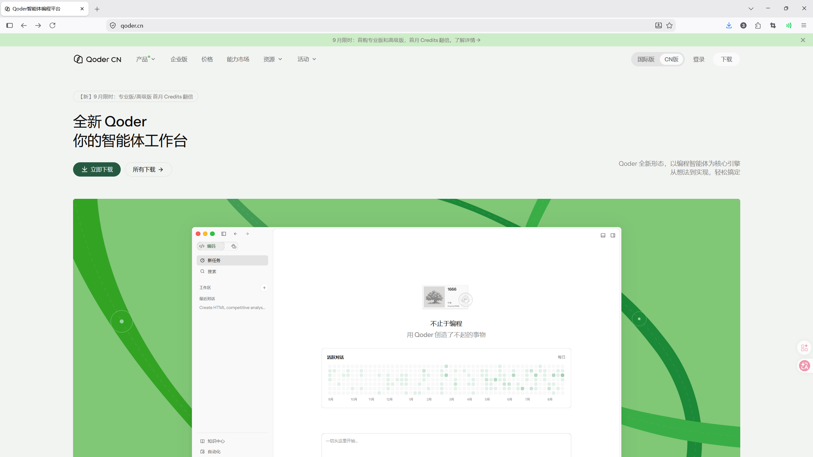
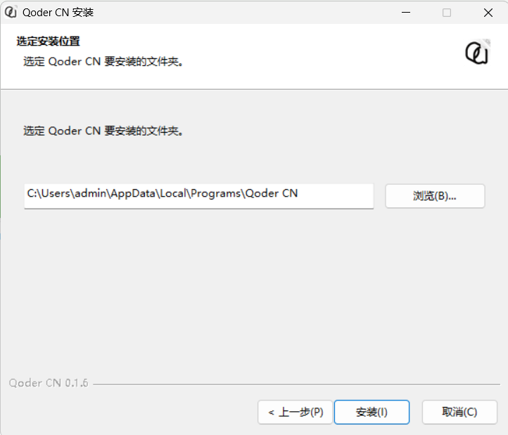
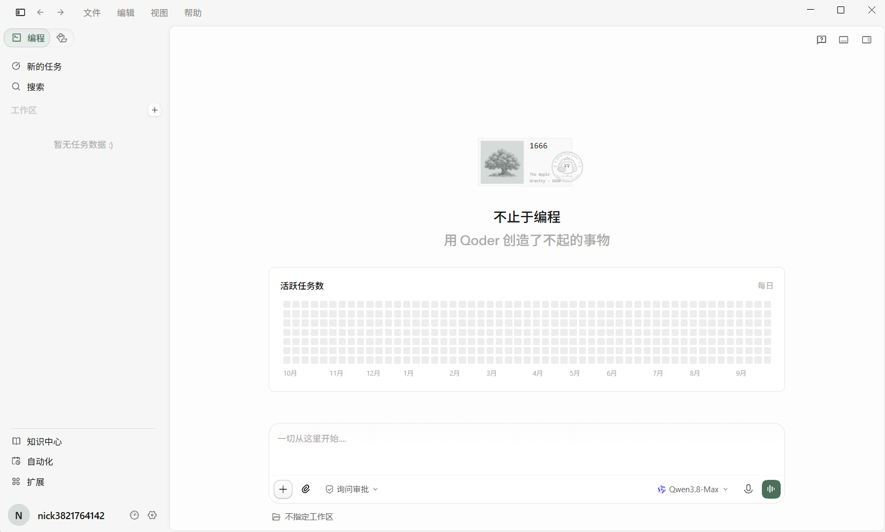
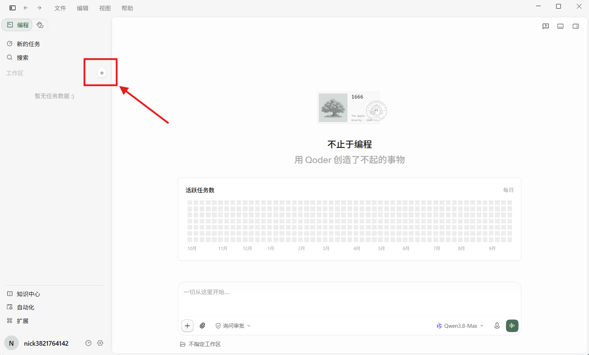
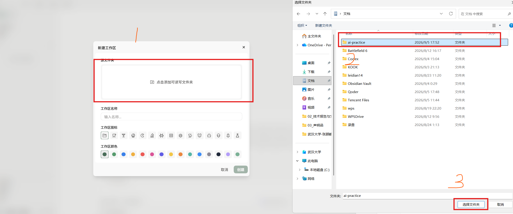

01：不用代理也能上手的 AI IDE
本章完成后，你会在 Windows 上装好一个 AI IDE，并能让它根据教程链接或报错一步步指导你。默认推荐 Qoder；WorkBuddy 只作为备选，二选一即可。
1. 安装 Qoder
- 打开 Qoder 下载页。

- 下载 Windows 安装程序，双击下载的文件。

- 按安装向导完成安装；完成后从开始菜单打开 Qoder。
- 浏览器会打开登录网页。没有账号时，点击登录表单底部的“注册”，按页面填写信息并完成验证；已经有账号就直接登录。

- 登录完成后切回 Qoder IDE。若浏览器询问是否打开 Qoder，确认来源是刚才的官方登录流程，再允许打开。
检查成功： Qoder 左下角显示你的账号，能看到新建/打开文件夹入口。
官方快速开始：Qoder 快速入门。
2. 先检查免费额度与学生认证
- 先打开 Qoder 官方定价说明，了解当前方案；在客户端右上角用户图标中查看账号相关入口。
- 打开这里按照教程领取 Qcoder CN 学生优惠；有就按页面要求完成认证。
- 没有学生入口时，不要反复注册账号。直接使用当前账户提供的免费试用或基础额度。
- 若账户页面有 Usage（用量）入口，点开查看已用量、剩余额度与重置时间；不要把试用额度当作永久额度。
检查成功： 你能看到自己的方案或额度状态。
学生认证可以作为领取优惠或免费额度的补充，但不是本章的必做步骤。本文尚未核实所有账号都能访问的学生认证固定入口，不承诺每位同学都能领取；资格、截止时间和额度以官方活动页面为准。没有入口就跳过，不要向第三方购买“学生认证”或交出证件、账号密码。查看官方定价。
3. 做第一次 AI 操作
- 按
Win+E打开 Windows 文件资源管理器，在左侧点击“文档”；右键右侧空白处 → “新建” → “文件夹”，输入ai-practice，按回车。 - 回到 Qoder IDE 主页，点击“打开”，在弹出的选择窗口进入“文档”，选中
ai-practice并打开。

- 按
Ctrl+tab切换为通用模式，然后开始愉快的对话
- 看清 AI 提议创建的文件名；确认无误后再同意执行。
- 在软件左侧的项目文件列表中点击
README.md；正文应在中间编辑区打开，核对是否只有要求的那一行。文件没有出现时，先在聊天里问清它是否已经执行，不要只把 AI 的“完成了”当作文件已创建。
检查成功： 文件夹中出现 README.md，且内容正确。
如果 AI 打开了错误文件夹，先停止它的操作，重新选择正确文件夹，再重新提问。不要为了省事给 AI 不受限制的权限。
4. 后面教程怎样交给 AI 帮忙
之后每次看到不懂的步骤，在浏览器打开对应文章，、Ctrl+C 复制链接。切回 Qoder，打开新会话后，只需要在消息输入框粘贴下面的模板并补齐内容：
如果 AI 说无法打开链接，返回文章，用鼠标选中当前小节的文字并复制，粘贴到同一会话，再附上完整报错。不要默认它已经读到了网页。
AI 的回答要自己检查：命令先读一遍，文件改动先看一遍；不要发送密码、私钥、订阅链接和验证码。
5. Qoder 无法使用时：WorkBuddy
- 打开 WorkBuddy 官网。
- 选择 Windows 下载，安装后启动客户端。
- 本文的完整点击路径以 Qoder IDE 为主；WorkBuddy 作为备选，不能照搬 Qoder 的按钮或快捷键。登录后按客户端提示选择本地工作目录，选中“文档”中的
ai-practice。找不到目录选择入口时，先用它的任务输入框询问如何选择本地文件夹，不要让它直接修改整个“文档”目录。 - 用与上面相同的提示词，让它只创建
README.md。
检查成功： 你能在一个 AI IDE 中打开文件夹、提出要求并检查改动。不要同时安装两个 IDE 来完成同一件事。
完成清单
- [ ] 已登录 Qoder，或已登录 WorkBuddy。
- [ ] 已查看 Qoder 账户的额度/活动入口。
- [ ] 已创建并检查
README.md。 - [ ] 知道怎样把教程链接和完整报错交给 AI。
下一篇：02 网络工具：iKuuu + Clash Verge。